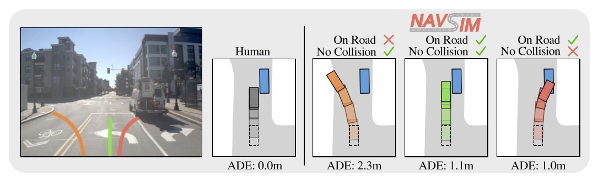
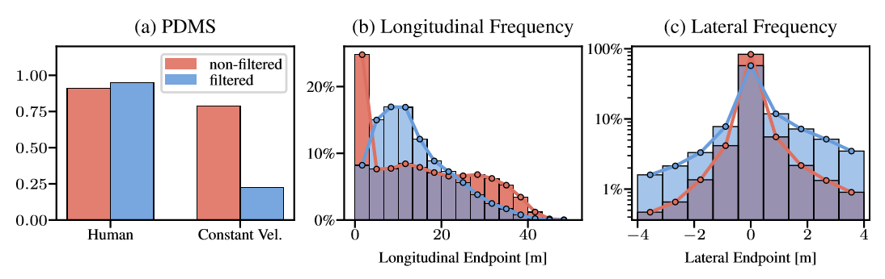
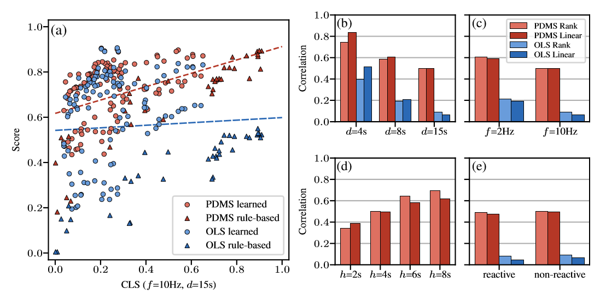
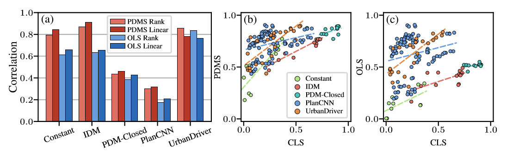
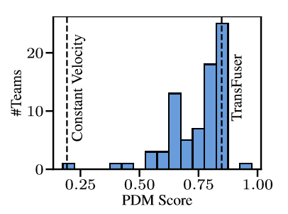

Daniel Dauner1,2、Marcel Hallgarten1,5、Tianyu Li3、Xinshuo Weng4、Zhiyu Huang4,6、Zetong Yang3、Hongyang Li3、Igor Gilitschenski7,8、Boris Ivanovic4、Marco Pavone4,9、Andreas Geiger1,2、Kashyap Chitta1,2
1University of Tübingen 2Tübingen AI Center 3OpenDriveLab at Shanghai AI Lab 4NVIDIA Research 5Robert Bosch GmbH 6Nanyang Technological University 7University of Toronto 8Vector Institute 9Stanford University
arXiv:2406.15349v2 [cs.CV]、2024年10月31日／第38回 Conference on Neural Information Processing Systems（NeurIPS 2024）Track on Datasets and Benchmarks
翻訳について：原文 PDF は
23_NAVSIM_2406.15349.pdf（全 14 ページ）。本文、図の説明、図中ラベル、表、脚注、付録を訳出し、論文タイトルと参考文献は原文のまま掲載。図は原図を掲載し、英語ラベルの日本語訳を併記した。数式・数値・引用番号・コードの識別子は原文を維持。原文の記述に関する補足は「訳注」と明示し、本文と区別している。
視覚ベースの運転方策をベンチマークすることは難しい。一方で、実データを用いたオープンループ評価は容易であるが、その結果はクローズドループでの性能を反映しない。他方で、クローズドループ評価はシミュレーションでは可能であるが、計算負荷が大きいためにスケールさせることが難しい。さらに、現在利用可能なシミュレータは実データとの間に大きなドメインギャップを示す。このため、急速に増えつつあるエンドツーエンド自動運転の研究から明確な結論を導くことができない状況が生じている。本論文では、これらの評価パラダイムの中間に位置する NAVSIM を提案する。NAVSIM では、大規模データセットを非反応型（non-reactive）シミュレータと組み合わせることで、大規模な実世界ベンチマークを可能にする。具体的には、テストシーンの鳥瞰図（bird’s eye view）による抽象表現を短いシミュレーション時間幅にわたって展開することで、前進度（progress）や衝突までの時間（time to collision）といったシミュレーションベースの指標を集計する。我々のシミュレーションは非反応型であり、すなわち、評価対象の方策と環境は互いに影響を及ぼさない。実験的に示すように、この分離によってオープンループでの指標計算が可能になると同時に、従来の変位誤差よりもクローズドループ評価との整合性が高くなる。NAVSIM により CVPR 2024 で新たなコンペティションが開催され、143 チームが 463 件のエントリーを提出し、いくつかの新しい知見が得られた。困難なシナリオの大規模な集合において、TransFuser のような計算要件が中程度の単純な手法が、UniAD のような近年の大規模なエンドツーエンド運転アーキテクチャに匹敵しうることを観察した。我々のモジュール式フレームワークは、新しいデータセット、データキュレーション戦略、指標によって拡張できる可能性があり、今後のチャレンジを開催するために継続的に保守される。コードは https://github.com/autonomousvision/navsim で公開している。
自動運転車（AV）は、交通を変革し交通安全を向上させる可能性を持つことから、非常に大きな研究上の関心を集めてきた［23, 9］。これにより、高次元のセンサデータを所望の車両制御出力へと写像する AV アルゴリズムの開発に取り組む大規模なコミュニティが生まれた。したがって、AV アルゴリズムの性能を測定し比較することは極めて重要な課題である。
残念ながら、運転性能を評価することは極めて難しく、今日最も広く使われているベンチマークはいくつかの点で不十分である。（1）nuScenes［5］などの使用されているデータセットは、物体検出などの認識タスクのために作られた。そのため、それらは計画（planning）の研究に対するデータの適切性よりも、視覚的な多様性とラベルの品質に重点を置いている。多くの場合、大半のフレームには過去の運転挙動を外挿するという自明な解が存在し、車両の過去の軌跡のみを観測する「盲目の（blind）」運転方策が最先端の性能を達成するという事態を招いている［56, 32, 16］。（2）運転は本質的に多面的なタスクであり、アルゴリズムは安全性、快適性、前進度といった複数の望ましい特性を両立させなければならないため、評価指標もまた、潜在的に相反する目的のバランスをとらなければならない。

図1：NAVSIM。平均変位誤差（ADE）のような従来の指標は、運転の多峰性（multi-modality）を見落としている。それらは、記録された人間の運転ログから逸脱する軌跡を、たとえその軌跡が安全であってもペナルティの対象とする。我々のベンチマークは、センサベースの運転方策が出力する軌跡を、衝突と地図への準拠を考慮したシミュレーションベースの指標で評価する。
図中ラベル：Human＝人間、On Road＝道路上、No Collision＝衝突なし、ADE＝平均変位誤差
しかし、図1に示すように、予測軌跡と記録された人間の軌跡との間の平均変位誤差（ADE）のような既存の指標は、軌跡の相対的な正確さをしばしば誤って表す。（3）運転は複数のエージェント間の相互作用を伴うため、評価は理想的には、例えばシミュレーションの中で、インタラクティブでなければならない。残念ながら、合成センサデータを用いる既存のシミュレータは、実世界の運転との間に大きなドメインギャップを示す。（4）加えて、標準化された評価設定が存在しないことにより、既存研究の指標の間に微妙な不整合が生じ、不公平な比較や不正確な結論につながっている［50, 32］。これらの問題が相まって AV 開発の進歩を妨げており、より原理に基づいたベンチマークの必要性を浮き彫りにしている。
本研究では、これらの問題を軽減するための取り組みを行う。第一に、興味深い運転シナリオをサンプリングする戦略を提案し、それを公開されている最大の運転データセット［26］に適用する。これにより、センサベースの運転方策の学習と評価のための 100k を超える困難な実世界運転シナリオを初めて得る。これらのシナリオでは、「盲目の」運転方策が、より原理に基づいたセンサベースの方策と競えないことを示す。第二に、AV のためのルールベース計画に関する文献［41, 18, 39, 16］に着想を得て、自動運転タスクの複数の側面をカバーする、多様で効率的かつ原理に基づいた指標の集合を定める。第三に、シミュレーションを非反応型のものに単純化することで、ドメインギャップを伴う不正確なセンサシミュレーションの必要性を回避する。観測された実世界のセンサ入力が与えられると、テスト対象のエージェントは特定の時間幅にわたる一連の行動を確定させる。さらに、これらの行動はシーン内の他のエージェントの将来の挙動に影響しないと仮定する。この設定の下では、シーンを単純化した鳥瞰図（BEV）抽象表現の中で、この時間幅にわたる全エージェントの予想される運動をシミュレートし、図1に見られるような相互作用を伴う指標を組み込むことが可能である。我々が選んだ指標がクローズドループシミュレーションの結果とよく相関することを実験的に示す。最後に、オープンソースの HuggingFace プラットフォーム上に公式の評価サーバを構築する。これは無料で、保守の負担が小さく、より困難なデータセットや指標への将来の拡張を可能にする。
これらのアイデアを組み合わせて、AV のデータキュレーション、シミュレーション、ベンチマークのための包括的なツールである NAVSIM を提案する。NAVSIM の標準化された学習用・評価用の分割を OpenScene データセット［15］で具体化するが、我々のフレームワークは他のデータセットにも拡張できる。これらの分割を用いて、これまで CARLA［17］または nuScenes［5］のいずれかのみでベンチマークされてきた代表的なエンドツーエンド運転モデルの詳細な分析を提示し、独立した評価設定においてこれら 2 系統の手法を初めて直接比較する。興味深いことに、両方の設定で開発された最良の手法の性能は、学習に必要な計算量に大きな差があるにもかかわらず、同程度であることがわかった。最後に、CVPR 2024 Workshop on Foundation Models for Autonomous Systems と併催された 2024 NAVSIM チャレンジ1を通じて得られた知見を振り返る。このチャレンジでは、13 か国の 143 チームが多様な手法を開発し、提案ベンチマーク上で競った。上位の手法は、数十億パラメータの視覚言語モデル［45, 33, 53, 58］から、軌跡のサンプリングとスコアリングに基づく、より効率的で近年見過ごされてきた手法［40, 20, 10］にまで及び、適切なツールが与えられたときに広いコミュニティが AV 研究を前進させる顕著な能力を持つことを示した。
脚注1：https://opendrivelab.com/challenge2024/#end_to_end_driving_at_scale
貢献。（1）学習とテストのための標準化されたプロトコル、幅広い利用可能性を確保するデータキュレーションツール、そして第 1 回 NAVSIM チャレンジで使用された公式の公開評価サーバを備えた、非反応型 AV シミュレーション（non-reactive AV simulation）のためのフレームワーク NAVSIM を構築する。（2）センサベースの運動計画の評価に適した、設定変更可能なシミュレーションベースの指標を開発する。（3）TransFuser、UniAD、PARA-Drive を含む一連のエンドツーエンド手法を NAVSIM 向けに再実装し、我々の困難なシナリオにおいて単純なモデルが驚くべき潜在力を持つことを示す。
エンドツーエンド運転。エンドツーエンド運転は、認識から計画に至るスタック全体を、単一の最適化可能なネットワークへと集約する。これにより、中間表現を人手で設計する必要がなくなる。先駆的な研究［35, 4, 27］に続いて、多様なエンドツーエンドモデルが登場した。例えば、エンドツーエンド手法の大きな一群はクローズドループシミュレータに焦点を当て、単一フレームのカメラ、LiDAR 点群、あるいはその両方の組み合わせを用いてエキスパートの模倣を行う［7, 11, 36, 8, 52, 43, 44, 12, 24, 57, 22］。より最近では、オープンループベンチマーク上でエンドツーエンドモデルを開発することが注目を集めている［20, 21, 25, 54, 32, 50］。本研究は、両コミュニティのエンドツーエンドモデルを比較するための新しい評価スキームを導入する。
シミュレーションによるクローズドループベンチマーク。運転シミュレータを用いると、自律システムをクローズドループで評価し、衝突率、交通規則の遵守、快適性などの下流の運転統計を収集することができる。多くの研究が、センサシミュレーションを備えた CARLA［17］や Metadrive［29］、あるいはデータ駆動シミュレーションのための nuPlan［26］や Waymax［19］といったシミュレータで評価を行っている。残念ながら、交通挙動やセンサデータをシミュレートする際に現実性を確保することは依然として困難な課題である。カメラや LiDAR センサをシミュレートするために、確立されたシミュレータの大半はグラフィックスベースのレンダリング手法に依存しており、視覚的な忠実度やセンサ特性の面で本質的なドメインギャップが生じる。運動計画のためのデータ駆動シミュレータは交通の記録を取り込むが、画像や LiDAR に基づく手法をサポートしていない［26, 19, 13］。データ駆動のセンサシミュレーションは、実世界のセンサデータを活用・適応させて、車両が異なる動きをする新しいシミュレーションを作り出すが、既存ツールのレンダリング品質は不十分である［1, 2, 49］。さらに、有望な画像［47］や LiDAR［34］の合成手法は存在するものの、センサを完全にデータから効率的にシミュレートすることは未解決の問題である。本研究では、短いシミュレーション時間幅の間はエージェントと環境が互いに影響しないという単純化の仮定を置くことで、実センサデータをシミュレーションベースの指標で評価する手法を提供する。この強い仮定にもかかわらず、実データでベンチマークを行う場合、我々の体系的な実験分析で示すように、NAVSIM は確立された評価プロトコルよりも計画性能をよく反映する。
変位誤差によるオープンループベンチマーク。オープンループ評価プロトコルは一般に、記録されたエキスパート（すなわち人間のドライバー）の軌跡と運動計画器の軌跡との間の変位誤差を測定する。しかし、特に nuScenes データセット［5］において、変位誤差による評価に関するいくつかの問題が最近表面化している。nuScenes は標準化された計画指標を提供していないため、先行研究は独自の実装に依存しており、結果の報告や比較において不整合が生じていた［50, 32］。次に、nuScenes における計画モデルの大半は、人間の軌跡の終点を離散的な方向コマンドとして受け取っており［20, 21, 25, 32, 50］、それによって正解情報が入力に漏洩している。さらに、nuScenes のシナリオの約 75% は自明な直進走行を含んでおり［32］、自車運動を外挿するだけの単純な解が成立してしまう。例えば AD-MLP は、運動学的な自車状態に対する MLP（認識を完全に無視する）が最先端の変位誤差を達成しうることを示している［56］。このような盲目のエージェントは紛れもなく危険であり、このことはより広い懸念、すなわち変位指標がクローズドループ運転と相関しないという懸念を浮き彫りにしている［14, 17, 3, 16］。本研究では、nuScenes に広く見られる問題に対処し、困難なシナリオと公式の評価サーバを備えた標準化された運転ベンチマークを提案する。ラベルの漏洩を防ぐために人間の軌跡ではなく車線グラフからナビゲーション目標を導出し、変位誤差に代わるものとして原理に基づいたシミュレーションベースの指標を提案する。
NAVSIM は、nuScenes［5］のようなオープンループベンチマークの使いやすさと、nuPlan［26］のようなクローズドループシミュレータに基づく指標とを組み合わせる。以下では、NAVSIM において運転エージェントに課されるタスクと指標を詳しく紹介する。続いて、困難なシーンを網羅する標準化された学習用・テスト用分割を得るためのフィルタリング手法を提案する。
タスクの記述。NAVSIM の運転エージェントは、\(h\) 秒の時間幅にわたる軌跡（将来の姿勢の系列として定義される）を計画しなければならない。入力には、カメラや LiDAR などの車載センサからの過去のフレームのストリームに加え、車両の現在の速度、加速度、ナビゲーション目標が含まれ、後者 3 つをまとめて自車状態（ego status）と呼ぶ。先行研究［20, 21, 25, 50］との互換性のため、ナビゲーション目標は左折、直進、右折の 3 カテゴリからなる one-hot ベクトルとして与える。
非反応型シミュレーション。従来のクローズドループベンチマークでは、通常、計画器を高い周波数、例えば 10Hz で推論させる［17, 26］。しかしこれには、運転エージェントへのすべての入力モダリティ、すなわちセンサベースの手法の場合には高次元のセンサストリームを、効率的にシミュレートすることが必要となる。これを回避するため、NAVSIM の中心的なアイデアは、非反応型シミュレーションを用いて運転エージェントを評価することである。これは、運転エージェントが各シーンの最初のフレームでのみ問い合わせを受けることを意味する。その後、計画された軌跡は軌跡の全期間にわたって固定される。この短い時間幅の間、運転エージェントには環境からのフィードバックが一切与えられず、NAVSIM の評価は純粋に最初の実世界センササンプルのみに基づく。これによりエージェントのタスクはより困難になり、シミュレーションは短い時間幅に限定される。我々は、先行研究でクローズドループ計画に十分であることが示されている［16］\(h = 4\) 秒の時間幅を選択する。この制約にもかかわらず、非反応型シミュレーションには重要な利点がある。すなわち、主に同様の状況における計画軌跡と人間のドライバーの軌跡を比較する従来のオープンループベンチマークとは異なり、シミュレーションの結果を用いて安全性、快適性、前進度を反映する指標を計算することができる。各シミュレーション反復で LQR 制御器［28］を適用して操舵と加速度の値を計算し、運動学的自転車モデル［37］によって自車を前進させる。このパイプラインを 4 秒の軌跡時間幅にわたって 10Hz で実行する。4.1 節では、この単純化の仮定にもかかわらず、我々の評価が従来のオープンループ指標よりもはるかに良くクローズドループ指標と整合することを示す。
PDM スコア。NAVSIM は運転エージェントを 2 段階でスコア付けする。まず、シミュレーション後に範囲 \([0,1]\) のサブスコアを計算する。次に、これらのサブスコアを PDM スコア（PDMS）\(\in [0,1]\) に集約する。この名称は、nuPlan のクローズドループシミュレーション中に軌跡候補を評価するためにこのスコア関数を用いる最先端のルールベース計画器、Predictive Driver Model（PDM）［16］にちなんでいる。この指標は、nuPlan のクローズドループスコア指標［26］を効率的に再実装したものでもある。NAVSIM では、サブスコアの追加・削除、集約パラメータの変更、あるいは例えば内部の閾値を調整してサブスコアをより厳しくすることによって、PDMS を適応させることができる。PDMS はフレームごとに計算され、フレーム全体で平均される。本研究では、サブスコアを次のように集約する：
\[ \text{PDMS} = \underbrace{\left( \prod_{m \in \{\texttt{NC},\texttt{DAC}\}} \texttt{score}_m \right)}_{\text{penalties}} \times \underbrace{\left( \frac{\sum_{w \in \{\texttt{EP},\texttt{TTC},\texttt{C}\}} \texttt{weight}_w \times \texttt{score}_w}{\sum_{w \in \{\texttt{EP},\texttt{TTC},\texttt{C}\}} \texttt{weight}_w} \right)}_{\text{weighted average}}. \tag{1} \]
式中ラベル：penalties＝ペナルティ、weighted average＝加重平均
サブスコアは、その重要度に応じてペナルティまたは加重平均の項に分類される。ペナルティは、衝突のような許容できない挙動を \(\lt 1\) の係数によって罰する。加重平均は、前進度や快適性といったその他の目的に関するサブスコアを集約する。以下では各サブスコアを簡潔に説明する。詳細は補足資料に記載している。
ペナルティ。衝突を避けて道路上にとどまることは、交通規則の遵守と歩行者や道路利用者の安全を確保するため、運動計画にとって不可欠である。したがって、道路利用者（車両、歩行者、自転車）との衝突なし（NC）を満たせない場合、あるいは走行可能領域への準拠（DAC）に関する違反がある場合には、それぞれ \(\texttt{score}_\texttt{NC} = 0\) または \(\texttt{score}_\texttt{DAC} = 0\) という厳しいペナルティが科される。この結果、そのシーンの PDMS は 0 となる。非反応型環境において「過失責任がある（at-fault）」とはみなされない特定の衝突、例えば自車が静止している場合の衝突は無視する。静的な物体との衝突については、\(\texttt{score}_\texttt{NC} = 0.5\) というより緩いペナルティを適用する。
加重平均。加重平均は、自車の前進度（EP）、衝突までの時間（TTC）、快適性（C）を考慮する。自車前進度サブスコア \(\texttt{score}_\texttt{EP}\) は、ルート中心線に沿ったエージェントの前進量を、PDM-Closed 計画器［16］から得られる近似的な安全上限に対する比として表す。PDM-Closed は、軌跡候補に基づく探索型の戦略によって、衝突や路外走行を伴わずに達成可能な前進量の値を求める。最終的な比は \([0,1]\) にクリップされ、上限が 5 メートル未満の場合は小さな前進スコアや負の前進スコアを破棄する。次に、TTC サブスコアは、運転エージェントが他の車両との安全マージンを守ることを保証する。このサブスコアはデフォルトで 1 の値をとり、4 秒の時間幅内のいずれかのシミュレーションステップにおいて、等速度・等方位で前方に投影したときの自車の衝突までの時間がある閾値を下回る場合に 0 に設定される。最後に、快適性サブスコアは、軌跡の加速度とジャークをあらかじめ定めた閾値と比較することで得られる。PDM-Closed 計画器と 2023 年の nuPlan Challenge で用いられたコストの重みに従い、加重平均の係数を \(\texttt{weight}_\texttt{EP} = 5\)、\(\texttt{weight}_\texttt{TTC} = 5\)、\(\texttt{weight}_\texttt{C} = 2\) と設定する。この選択は妥当であり、変更に対して頑健であることを確認している。例えば、サブスコアに等しい重みを割り当てても、NAVSIM チャレンジの上位 3 位の順位は変わらない。

図2：フィルタリング。（a）人間のドライバーと比較して、等速度・等方位を維持する方策が失敗する困難なシーンを対象とする。（b）我々のフィルタリングは主に、縦方向の動きが静止または高速であるシーンを除去し、（c）横方向の動きの多様性を高める（対数スケール）。
図中ラベル：non-filtered＝フィルタリングなし、filtered＝フィルタリングあり、Human＝人間、Constant Vel.＝等速度、Longitudinal Frequency＝縦方向の頻度、Lateral Frequency＝横方向の頻度、Longitudinal Endpoint＝縦方向の終点、Lateral Endpoint＝横方向の終点
データセット。NAVSIM フレームワークは運転データセットの選択に依存しない。我々は、公開されている最大のアノテーション付き運転データセットである nuPlan［26］を再配布した OpenScene［15］を選択する。OpenScene は、エンドツーエンド計画アルゴリズムで一般に考慮される 2Hz に周波数を下げた 120 時間の運転を含み、nuPlan と比較してデータ保存容量の要件を 20 TB 超から 2 TB へと 90% 削減している。OpenScene に基づく我々のエージェント入力は、それぞれ 1920 × 1080 ピクセルの解像度を持つ 8 台のカメラと、5 台のセンサから統合された LiDAR 点群からなる。入力には現在の時刻ステップと、オプションで過去 3 フレームが含まれ、2Hz で合計 1.5 秒となる。原理的には、アノテーション付きの HD マップ、物体のバウンディングボックス、センサデータを提供する任意の運転データセットを、この形式に変換して NAVSIM で使用することができる。
困難なシーンのためのフィルタリング。人間の運転データの大部分は、停止中やほぼ一定速度での直進走行といった自明な状況を含む。これらは単純なヒューリスティクスで効率的に解くことができる。例えば図2（a）に示すように、等速度・等方位を維持するベースラインは OpenScene データセットで 79% の PDMS を達成し、人間レベルの性能は 91% に相当する。NAVSIM では、（1）ほぼ自明な解を持つフレームと（2）重大なアノテーション誤りを含むフレームを除去した、フィルタリング済みデータセットの使用を提案する。前述の等速度エージェントが 0.8 を超える PDMS を達成するかどうかを検出することで、極めて単純なシーンを除去する。同様に、人間の軌跡の PDMS が 0.8 未満となるシーンを除去する。これにより、これらの困難なシナリオに対して許容可能な解が存在することが保証され、不正確なバウンディングボックスのようなノイズの多いアノテーションが除外される。これらの閾値は、所望するフィルタリング済みデータセットの規模に応じて調整できる。得られたシナリオは困難であり、そのことは等速度エージェントのスコアが 22% に低下する一方で、人間のエキスパートが 95% のスコアを達成することからも裏付けられる。図2（b-c）に見られるように、旋回のような非自明なシナリオの比率が高まることで、終点は（非ゼロの場合に）縦方向の距離が短くなり、横方向にはより均等に分布するようにもなる。我々はこのフィルタリング戦略を用いて、navtrain および navtest と呼ぶ学習用・テスト用の標準化された分割を提供する。サンプル数はそれぞれ 103k と 12k である。このキュレーションされたデータは、その大規模さと多様さに比して中程度の保存容量（450 GB）で、単独のダウンロードオプションとして利用可能なベンチマークとなる。
本節では、次の問いに答えることを目的とした実験の結果を示す。（1）非反応型のオープンループシミュレーションは、クローズドループ指標と十分な相関を提供できるか。（2）NAVSIM での実験は、従来のベンチマークと比較してどのような新しい結論をもたらすか。

図3：クローズドループとの整合性。（a）各計画器について、オープンループ指標（OLS、PDMS）を対応するクローズドループスコア（CLS）とともに示す。相関を表す傾向線は、すべての（学習ベースおよびルールベースの）計画器に対して線形にフィットしたものである。さらに、（b）CLS の継続時間 \(d\)、（c）計画周波数 \(f\)、（d）PDMS の時間幅 \(h\)、（e）クローズドループにおける背景エージェントの挙動、の違いを分析する。
図中ラベル：Score＝スコア、Correlation＝相関、PDMS learned／OLS learned＝学習ベース計画器の PDMS／OLS、PDMS rule-based／OLS rule-based＝ルールベース計画器の PDMS／OLS、PDMS Rank／OLS Rank＝順位相関（Spearman）、PDMS Linear／OLS Linear＝線形相関（Pearson）、reactive＝反応型、non-reactive＝非反応型
オープンループ指標は理想的には、さまざまな運転アルゴリズムの評価においてクローズドループ指標と整合しているべきである。本節では、多数の計画器をベンチマークし、クローズドループ指標と、従来の距離ベースのオープンループ指標および提案する PDMS との整合性を分析する。
ベンチマーク。クローズドループ指標とオープンループ指標の関係を調べるには、完全に反応型のシミュレータが必要である。データセットとの互換性を保つため、正解の認識結果と HD マップ入力にアクセスできる特権的計画器のシミュレーションを可能にする nuPlan シミュレータ［26］を用いる。PDMS と同様に、nuPlan は 2 つの公式スコアにおいて加重平均と乗算型のペナルティを組み合わせている。オープンループスコア（OLS）は変位誤差と方位誤差を乗算型のミス率とともに集約し、クローズドループスコア（CLS）は 3 節と同様の指標を実装している。PDMS を含め、すべての指標は \([0,1]\) の範囲にあり、スコアが高いほど性能が良いことを示す。
クローズドループシミュレーションの計算要件が大きいため、navmini 分割で評価を行う。これは迅速なテストのために新たに作成した分割で、合計 396 シナリオからなり、navtrain とも navtest とも独立しているが、同じ戦略（3.1 節）でフィルタリングされているため同様に分布している。nuPlan は 2 種類の背景エージェントを提供していることに注意する。すなわち、Intelligent Driver Model（IDM）［48］に基づいて車線中心に沿って走行する反応型エージェントと、データセットから再生される非反応型エージェントであり、特に断らない限り後者を用いる。より長い、あるいは動的な長さの反応型シミュレーションは、例えば長期的な意思決定を評価するために一般に望ましいが、それを実現するには長時間幅シミュレーションのための専用の解決策が必要であり、それは現在 nuPlan では利用できない［13］。したがって、デフォルトでは、nuPlan における標準的なクローズドループシミュレーション設定［26］である、固定のクローズドループシミュレーション継続時間 \(d = 15\)s と計画周波数 \(f = 10\)Hz を用いる。
運動計画器。nuPlan では、オープンループ指標は学習ベースの計画器に有利である一方、ルールベースの手法はクローズドループ評価で良好な性能を示す［16］。この実験では、異なる性能レベルをカバーするために両方の種類の計画器を組み合わせて用いる。合計で、2 つの等速度モデルと 8 つの等加速度モデル、15 の IDM 計画器［48］、および軌跡生成のハイパーパラメータが異なる 12 の PDM-Closed の変種［16］からなる、37 のルールベース計画器を含める。学習ベースの計画については、2 つのモデルサイズと 2 つの学習期間による Urban Driver モデル［42］と、BEV ラスタ、自車状態、中心線、ナビゲーション目標の 15 通りの入力の組み合わせによる PlanCNN［38］モデルを評価する。すべてのモデルを、navtrain の \(\{25\%, 50\%, 100\%\}\) と、OpenScene から一様にサンプリングした同じサイズのサブセットで学習し、114 の学習ベース計画器を得る。詳細は補足資料を参照されたい。
結果。指標間の整合性を図3（a-e）に示す。OLS と比較して、PDMS では Spearman の（順位）相関係数と Pearson の（線形）相関係数の両面で、一貫してクローズドループとのより良い相関が観察される。（a）に示すように、PDMS は学習ベースとルールベースの両方の計画器のクローズドループ特性を捉えることができる一方、距離ベースのオープンループ指標は明確な不整合を示す。（b）において CLS の継続時間を \(d = 15\)s から \(d = 4\)s に短縮すると、シミュレーションの時間幅がオープンループ側の時間幅により近く一致するため、PDMS と OLS の相関はさらに高まる。興味深いことに、（c）では計画周波数を 2Hz に下げると、オープンループ指標の相関が高くなることが観察される。計画周波数を下げることで累積誤差が緩和され、シミュレーションにおける制御器の安定性が高まり、より正確な軌跡の実行につながると考えられる。さらに、（d）では PDMS の時間幅を \(h = 2\)s から \(h = 8\)s へと長くするにつれて相関が増加することが観察される。不確実なシナリオにおいて 8 秒先までの将来の運動を予測することは困難であるが、この結果は、運動計画器を評価する際の長い時間幅の価値を示している。最後に、（e）においてクローズドループシミュレーション中の非反応型の背景エージェントを反応型の IDM 車両に置き換えても相関にはほとんど影響がなく、これはおそらく両タスクの難しさが同程度であるためである［16］。

図4：計画器の種類ごとの指標の整合性。本研究で考慮した 5 種類の計画器について、オープンループ指標（OLS、PDMS）とクローズドループスコア（CLS）との相関係数を報告する。どの種類の計画器においても、PDMS は CLS とより良く相関している。
図中ラベル：Correlation＝相関、PDMS Rank／OLS Rank＝順位相関、PDMS Linear／OLS Linear＝線形相関、Constant＝等速度・等加速度モデル
| 手法 | 自車状態 | 画像 | LiDAR | 動画 | NC ↑ | DAC ↑ | TTC ↑ | Comf. ↑ | EP ↑ | PDMS ↑ |
|---|---|---|---|---|---|---|---|---|---|---|
| Constant Velocity | ✓ | 68.0 | 57.8 | 50.0 | 100 | 19.4 | 20.6 | |||
| Ego Status MLP | ✓ | 93.0 | 77.3 | 83.6 | 100 | 62.8 | 65.6 | |||
| LTF［12］ | ✓ | ✓ | 97.4 | 92.8 | 92.4 | 100 | 79.0 | 83.8 | ||
| TransFuser［12］ | ✓ | ✓ | ✓ | 97.7 | 92.8 | 92.8 | 100 | 79.2 | 84.0 | |
| UniAD［21］ | ✓ | ✓ | ✓ | 97.8 | 91.9 | 92.9 | 100 | 78.8 | 83.4 | |
| PARA-Drive［50］ | ✓ | ✓ | ✓ | 97.9 | 92.4 | 93.0 | 99.8 | 79.3 | 84.0 | |
| Human（人間） | 100 | 100 | 100 | 99.9 | 87.5 | 94.8 |
表1：navtest ベンチマーク。過失責任のある衝突なし（NC）、走行可能領域への準拠（DAC）、衝突までの時間（TTC）、快適性（Comf.）、自車前進度（EP）の各サブスコアと PDM スコア（PDMS）をパーセントで示す。自車状態に頼るだけでは競争力のある結果には不十分である。センサを用いるエージェントは性能が向上するものの、人間の性能との差は我々のベンチマークの難しさを浮き彫りにしている。
本研究における計画器の種類ごとの分布の偏りは、図3に示した全体の相関にバイアスをもたらす可能性がある。これに対処するため、図4において計画器の種類ごとの個別の相関を可視化する。相関の値は、各計画器の種類の指標の範囲と分散に応じて変化する。それでもなお、各種類を個別に調べると、PDMS は OLS よりも CLS と良く相関しており、常に正の相関を示す。
本節では、既存のオープンループまたはクローズドループのベンチマークでこれまで最先端の性能を達成してきた一連のエンドツーエンドアーキテクチャをベンチマークする。
手法。下限として、3.1 節で詳述した（1）Constant Velocity（等速度）ベースラインを考える。2 つ目の「盲目の」エージェントとして、自車の速度、加速度、ナビゲーション目標のみが与えられたときに MLP を用いて軌跡を予測する（2）Ego Status MLP を含める。CARLA で確立されたアーキテクチャとして、我々が再実装した（3）TransFuser［12］を評価する。これは、切り出して縮小した 3 台の前方カメラの画像を連結した 1024 × 256 の画像と、ラスタ化した BEV の LiDAR 入力を用いてウェイポイントを予測する。補助タスクとして 3D 物体検出と BEV セマンティックセグメンテーションを行う。次に、TransFuser と同じアーキテクチャを共有しつつ LiDAR 入力を学習された埋め込みに置き換え、そのためカメラ入力のみを必要とする（4）Latent TransFuser（LTF）［12］を考える。さらに、nuScenes でのオープンループ軌跡予測のための最先端のエンドツーエンドアーキテクチャを 2 つ取り上げる。（5）UniAD［21］は、マッピング、トラッキング、運動予測、占有予測といった幅広いタスクを半逐次的なアーキテクチャに組み込んでおり、特徴表現を複数の Transformer デコーダで処理し、最終的に軌跡計画モジュールに至る。（6）PARA-Drive［50］は同じ補助タスクを用いるが、ネットワークアーキテクチャを並列化し、補助タスクのヘッドが共有エンコーダとともに並列に学習されるようにしている。UniAD と PARA-Drive はいずれも BEVFormer バックボーン［31］を用いており、4 つの時間フレームにわたる 8 台のサラウンドビュー 1920 × 1080 カメラ画像を BEV 特徴表現へと符号化する。全手法の実装の詳細は補足資料に記載している。
| 設定 | パラメータ | 設定値 | NC ↑ | DAC ↑ | TTC ↑ | Comf. ↑ | EP ↑ | PDMS ↑ |
|---|---|---|---|---|---|---|---|---|
| A1 | デフォルト設定 | Seed 1 | 98.0 | 91.3 | 94.2 | 100 | 78.1 | 83.3 |
| A2 | Seed 2 | 97.7 | 92.8 | 92.8 | 100 | 79.2 | 84.0 | |
| A3 | Seed 3 | 97.9 | 93.0 | 93.1 | 100 | 79.3 | 84.4 | |
| B1 | 自車状態 | 目標のみ | 96.8 | 91.9 | 91.3 | 98.6 | 77.3 | 81.8 |
| B2 | 目標と速度のみ | 96.7 | 92.3 | 91.0 | 100 | 77.8 | 82.3 | |
| C1 | カメラ FOV | 60°（カメラ 1 台） | 96.7 | 90.2 | 90.9 | 100 | 75.8 | 80.3 |
| C2 | 160°（カメラ 3 台） | 97.6 | 91.4 | 92.7 | 100 | 78.1 | 82.8 | |
| C3 | 240°（カメラ 5 台） | 97.8 | 92.5 | 93.0 | 100 | 79.2 | 84.1 | |
| D1 | LiDAR 範囲 | F:16, B:16, L:16, R:16 | 96.9 | 88.3 | 91.2 | 100 | 74.6 | 79.1 |
| D2 | F:64, B:32, L:32, R:32 | 97.8 | 92.7 | 93.4 | 100 | 79.3 | 84.3 | |
| D3 | F:64, B:64, L:64, R:64 | 96.8 | 90.3 | 91.5 | 100 | 76.5 | 81.0 | |
| E1 | 教師信号 | BEV セグメンテーションなし | 97.4 | 90.5 | 92.2 | 100 | 77.1 | 81.6 |
| E2 | 3D 検出なし | 97.8 | 92.7 | 92.9 | 100 | 79.2 | 84.0 |
表2：TransFuser のアブレーション。最良の結果を得るデフォルト設定は、自車状態の入力としてナビゲーション目標、速度、加速度を用いる。カメラ FOV は約 140° で、LiDAR の範囲は前方（F）、後方（B）、左（L）、右（R）にそれぞれ 32m である。両方の補助タスクを用いる。
結果。navtest での結果を表1に示す。Constant Velocity モデルは、ベンチマークから除外される自明な運転シーンを特定するために使われるエージェントであるため、下限となる。Ego Status MLP は 65.6 の PDMS を達成しており、衝突や路外走行を避けるうえで加速度とナビゲーション目標が有用であることを示している。しかし、nuScenes での結果［32］とは対照的に、自車状態のみに依存するエージェントとセンサデータを考慮するエージェントとの間には明確な差が観察される。すべてのセンサエージェントが 83 を超える PDMS を達成し、TransFuser と PARA-Drive が 84.0 の PDMS でわずかに最良の性能を示す。驚くべきことに、カメラのみの LTF も同程度の結果（83.8）を達成する。UniAD は 83.4 の PDMS に達するが、PARA-Drive とともに、より負荷の高い学習を必要とするにもかかわらず TransFuser や LTF の性能を上回らない。例えば、navtrain 分割での学習に、PARA-Drive は 80 GPU で 3 日を要するのに対し、TransFuser は 1 GPU で 1 日である。自車への特定の追突を除外する「過失責任のある衝突」の定義のため、UniAD と PARA-Drive が用いるサラウンドビューカメラや TransFuser の LiDAR 入力は、LTF の唯一の入力である広角前方カメラほど重要ではないのではないかと推測する。人間のオペレータとの 10 PDMS の差は、navtest が十分に研究されたエンドツーエンドアーキテクチャにとっても困難であることを示している。具体的には、走行可能領域への準拠（DAC）と自車前進度（EP）のサブスコアが最も困難なままである。特に、正規化に用いられる最大前進量の推定値は特権的なルールベース運動計画器に基づいているため、EP は人間の模倣のみでは解くことができない。興味深いことに、すべてのエージェントがほぼ完璧な快適性スコアを達成しており、滑らかな加速度とジャークのプロファイルが人間の模倣から自然に学習されることを示している。
TransFuser の分析。表2では、TransFuser のいくつかの学習設定を比較する。設定 A1–A3 の 3 つの学習シードについて、PDMS の標準偏差は ± 0.56 であり、これは CARLA［17］のクローズドループシミュレーションにおける学習シード間のばらつきと比べて比較的小さい。さらに、CARLA とは異なり NAVSIM は決定論的であり、決定論的な運転エージェントの評価を繰り返すと同一のスコアが得られる。速度と加速度を除外する（B1）と PDMS は 1.5 − 2.6 低下し、加速度のみを除外する（B2）とスコアは 1.0 − 2.1 低下する。このことから、TransFuser は自車状態から恩恵を受けているものの、計画において運動学的状態のみに依存しているわけではないと結論づける。次に、FOV 60° の前方カメラのみを考慮する（C1）と、切り出して連結した 3 枚の画像で FOV 140° とするデフォルト設定と比較して、ほぼすべてのサブスコアがわずかに低下する。しかし、カメラを追加して FOV を広げても、スコアが大幅に改善するわけではない。興味深いことに、LiDAR の範囲を全方向 16m に制限する（D1）とスコアは 79 となり、これは LiDAR を完全に取り除いた場合（表1の LTF を参照）よりも低い。LiDAR の範囲を前方に 64m（D2）または全方向に 64m（D3）に拡大しても、大きな改善は得られない。LiDAR 範囲の変更は、LiDAR 座標系で動作する補助タスクである 3D 物体検出と BEV セマンティックセグメンテーションを過度に単純化または複雑化し、効果的な模倣学習を妨げるのではないかと推測する。補助タスクを除外することでその影響を確認したところ、BEV セグメンテーションなし（E1）では性能が低下した。

図5：NAVSIM チャレンジ。
図中ラベル：#Teams＝チーム数、PDM Score＝PDM スコア、Constant Velocity＝等速度ベースライン、TransFuser＝TransFuser ベースライン
CVPR 2024 NAVSIM チャレンジ。我々は、2024 年 3 月から 5 月にかけて実施された第 1 回 NAVSIM チャレンジを主催した。公正性を確保するため、非公開のデータセットを用い、参加者にはセンサ入力へのアクセスのみを与えて、すべてのアノテーションは非公開とした。参加者は自分のエージェントの軌跡をリーダーボードに提出でき、そこで軌跡がシミュレートされ、スコア付けされて PDMS が得られた。143 チームから 463 件の提出を受け、そのうち 78 件の提出が公開された。それらのスコアを、表1の等速度ベースラインおよび TransFuser ベースラインとの相対で図5にまとめる。優勝したエントリーは TransFuser を拡張し、VADv2［10］に着想を得たサンプリング戦略を用いて、軌跡サンプルに対する代理（proxy）サブスコアを予測するよう学習した［30］。これらの予測されたサブスコアを人間の模倣スコアとともに重み付けして、出力する計画を選択した。軌跡をサンプリングしてスコア付けするというアイデアはよく知られている［46, 51, 55, 6, 16］が、近年では単一の軌跡を予測する手法が好まれ、見過ごされてきた。この結果は、そのような手法の再評価を促すものである。2 位のチームは運転のために視覚言語モデル（VLM）を用いており、これは AV の文献において急速に一つの下位分野として台頭しつつある［45, 33, 53, 58］。いくつかの提出は、UniAD［21］や VAD［25］など nuScenes での先行研究を再実装または拡張しようと試みたが、エンジニアリング上の大きな課題と計算要件のため、チャレンジの提出締め切りまでに TransFuser ベースラインを上回ることはできなかった。リーダーボード上の解の多様性は、自動運転研究の最前線を押し広げるためのフレームワークとしての NAVSIM の可能性を示している。今後、より困難なデータと指標を用いたコンペティションを開催することを目指している。コンペティションの詳細な結果と統計は補足資料に記載している。
NAVSIM 1.1 リーダーボード。チャレンジ後も関心が続いていることから、navtest を評価用分割とする公開評価サーバを再開した。このリーダーボードは複数シードでの提出を推奨しており、コードとモデルの重みを公開するという再現性の要件を含んでいる。表3に示すように、我々の学習ベースのベースラインの 3 つの学習シードをリーダーボードに登録した。参考として、2024 年チャレンジの優勝手法［30］と等速度ベースラインの単一シードの結果も含めている。詳細は補足資料とリーダーボードのウェブページ2に記載している。
脚注2：https://huggingface.co/spaces/AGC2024-P/e2e-driving-navsim
| 手法 | PDMS ↑ |
|---|---|
| TransFuser［12］ | 83.9 ± 0.4 |
| LTF［12］ | 83.5 ± 0.6 |
| Ego Status MLP | 66.4 ± 0.9 |
| Hydra-MDP［30］ | 91.3 |
| Constant Velocity | 20.6 |
表3：リーダーボード 1.1。
我々は、非反応型 AV シミュレーションのためのフレームワーク NAVSIM を提示した。既存の運転ベンチマークの欠点に対処し、運転方策をベンチマークするための、標準化されていながら設定変更可能なシミュレーションベースの指標を提案した。利用しやすさのために、困難なシナリオ分割と単純なデータキュレーション手法を提供した。我々の評価プロトコルがクローズドループ運転とより良く整合することを示し、CARLA と nuScenes の確立されたエンドツーエンド計画ベースライン群をベンチマークし、第 1 回コンペティションの結果を提示した。NAVSIM が、シミュレーションと実世界の運転の間のギャップを埋める、AV 研究者にとって利用しやすいツールキットとなることを期待する。
反応型シミュレーションの必要性。変位誤差に対する改善を示したものの、運転のいくつかの側面は NAVSIM での評価では扱われないままである。我々のフレームワークは反応性やクローズドループシミュレーションにおける誤差の複合的な蓄積を考慮しないため、高い PDMS が常に高い CLS を意味するわけではない。さらに、CLS と同様に、自車への追突は現在「過失責任がある」とは分類されないため、NAVSIM では車両後方のシーンにほとんど重要性が与えられない。将来、データ駆動のセンサシミュレーションや交通シミュレーションが成熟し計算的に扱えるようになれば、これらの問題を緩和できる可能性がある。現在のフレームワークのこうした限界を踏まえ、計画アルゴリズムを開発する際には、CARLA［17］のようなグラフィックスベースのクローズドループシミュレータを NAVSIM を補完するベンチマークとして用いることを強く推奨する。
指標の単純さ。出発点として、NAVSIM は解釈可能なオープンループのサブスコアとスカラー化関数の両方を提供しており、これによりチャレンジ参加者に最終スコアと順位を提供することができる。将来的には、多目的評価や他の集約関数が必要になるかもしれない。さらに、クローズドループ指標にも問題があり、すなわち PDMS は nuPlan の CLS のいくつかの弱点を受け継いでいる。どちらのスコアも、特定の交通規則（例えば一時停止標識や信号の遵守）や、公共交通機関・燃費効率といった概念を考慮しない。将来的には、サブスコアの定義（例えば過失責任のある衝突の判定ロジック）を改善し、集約の際にサブスコアを追加することを目指している。
データセットの募集。ラベル空間における欠落クラス、カメラパラメータの軽微な誤り、車両の姿勢や 3D アノテーションのノイズなど、nuPlan データセットの特定の限界は NAVSIM にも残っている。我々の分析は、そのような不整合に頑健な手法に有利に働いている可能性がある。加えて、我々の表現には道路の標高データがないため、3D 地図アノテーションに基づくシナリオを統合することが課題となっている。今後はより多くのデータセットをサポートすることを目指しており、自動運転の進歩を加速するために、コミュニティによるより多くのオープンデータセットの公開を呼びかけたい。
本研究は、ERC Starting Grant LEGO-3D（850533）、DFG EXC number 2064/1 - project number 390727645、ドイツ連邦教育研究省：Tübingen AI Center, FKZ: 01IS18039A、およびドイツ連邦経済・気候保護省のプロジェクト NXT GEN AI METHODS の支援を受けた。Daniel Dauner と Kashyap Chitta を支援してくれた International Max Planck Research School for Intelligent Systems（IMPRS-IS）に感謝する。また、評価サーバをホストしてくれた HuggingFace、組織面で支援してくれた OpenDriveLab のチームメンバー、そしてデータセットをオープンソース化し、2024 NAVSIM チャレンジで用いた非公開のテスト分割を提供してくれた Motional の Napat Karnchanachari 氏とそのチームに感謝する。
参考文献は原文のまま掲載した。